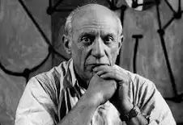

Pablo Picasso
The man who invented cubism

Pablo Picasso(1881-1973)
A Short Biography of Pablo Picasso:
- Picasso was born on October 25,1881 in the city of Malaga,Spain
- His real name is Pablo Diego Jose Francisco de Paula Juan Nepomuceno Maria de los Remedios Cipriano de la Santisima Trinidad Martyr Patricio Clitio Ruiz y Picasso.
- He received this name when he was baptized
- His long name comes from a list of saints and relatives
- His first word was "lapiz" the Spanish word for pencil
- His father was an artist, art professor and museum curator
- Pablo completed his first painting when he was nine years old. The title of the painting was Le Picador. The image is of a man riding a horse in a bullfight
- His father decided that he would give up painting when Picasso was 13 years old because he felt his son was already a better painter than him
- He studied at the Royal Academy of San Fernando
- Picasso was extremely fond of the works of El Greco
- In between his Blue and Rose Periods, Pablo Picasso moved to France
- Picasso’s first job was with an art dealer named Pere Menach
- Picasso was a co-founder in the movement known as Cubism
- The Nazis would not let Picasso display his paintings in Germany
- Picasso's art work can be found in art museums throughout the world
- Picasso had many lovers throughout his life. He often painted pictures of one his many lovers, named Dora Maar
- Picasso had four different children by three different women
- He was married twice
- Picasso passed away on April 8, 1973 in Mougins, France
"Painting is a blind man's profession. He paints not what he sees, but what he feels, what he tells himself about what he has seen"
--Pablo Picasso--
If you have time, you should read about this incredible human being on his Wikipedia entry